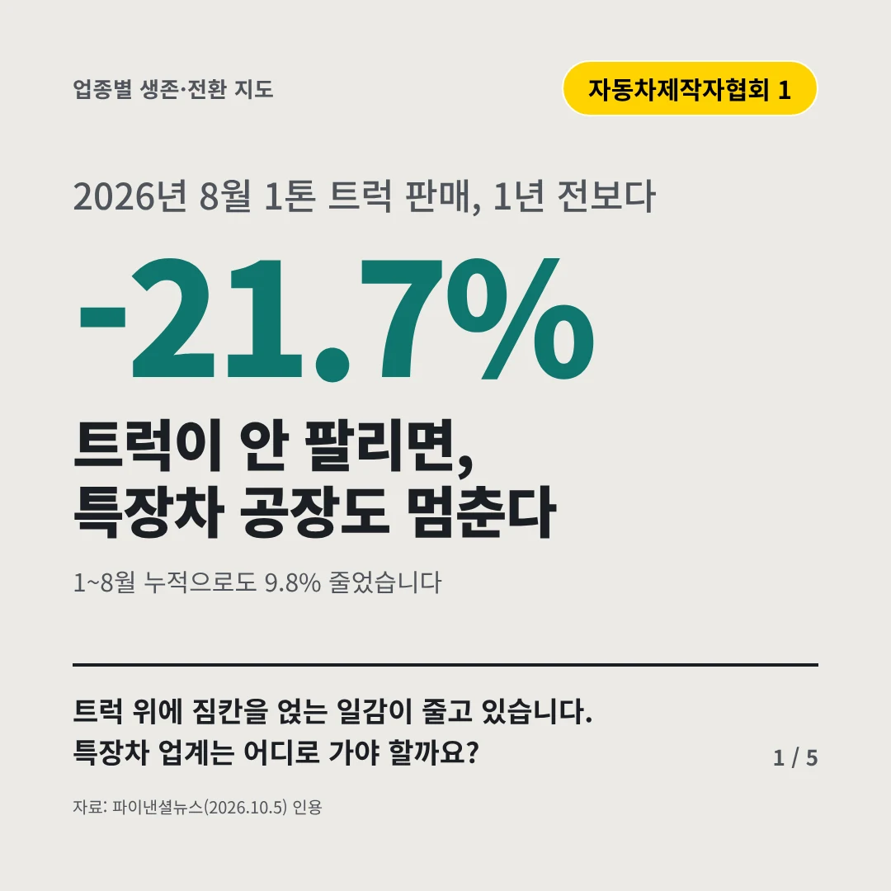
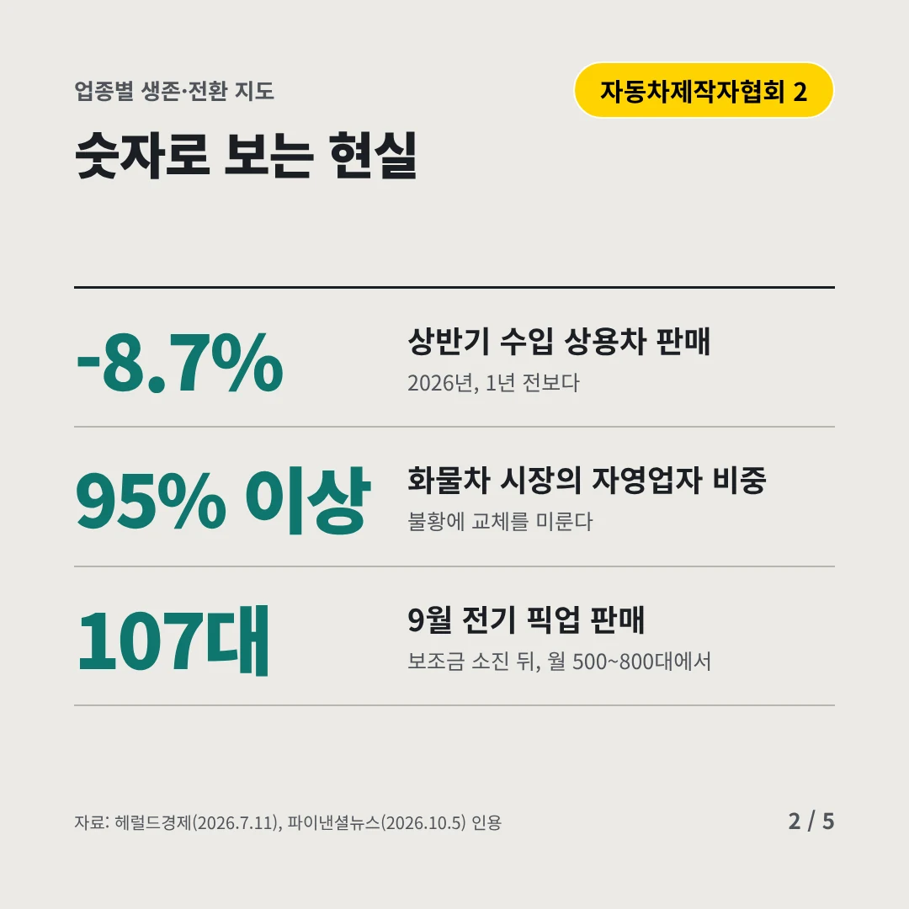
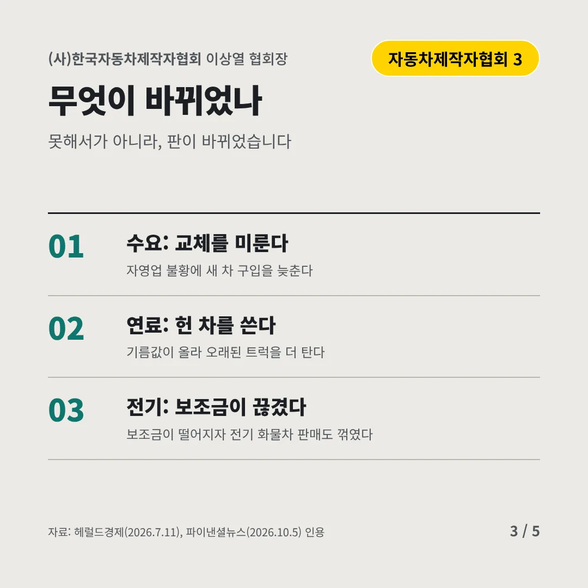
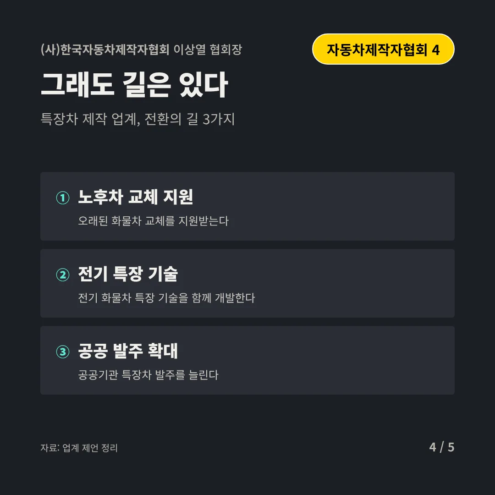
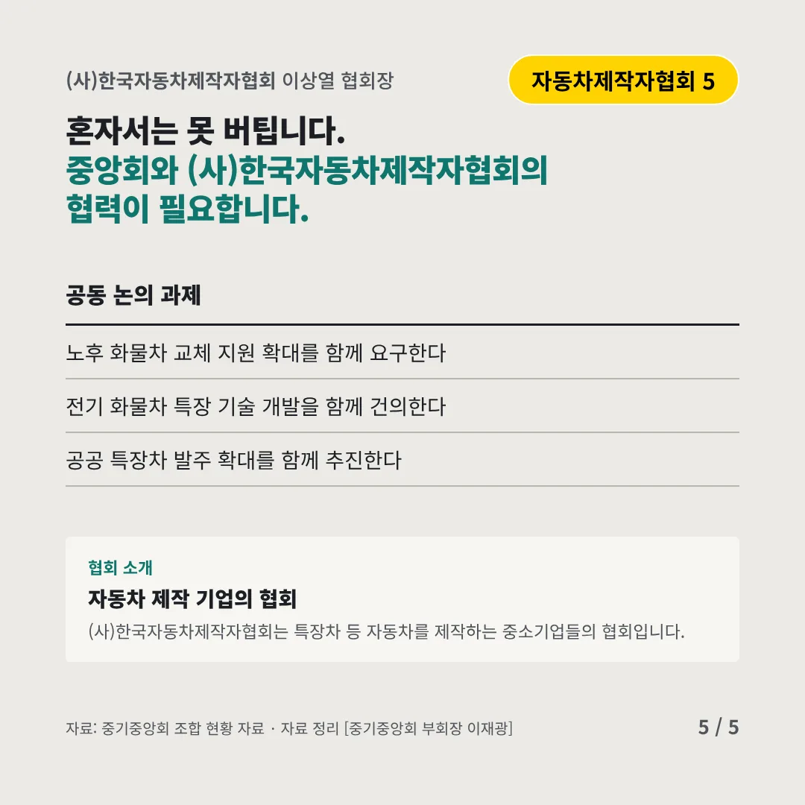
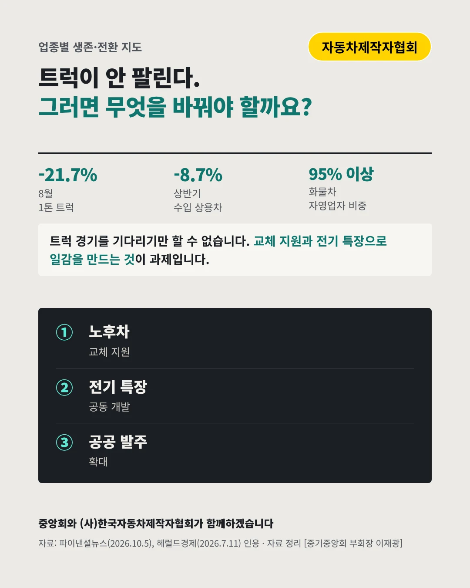

(사)한국자동차제작자협회
트럭이 안 팔리면, 특장차 공장도 멈춘다
-21.7% 2026년 8월 1톤 트럭 판매, 1년 전보다






트럭 위에 짐칸을 얹는 일감이 줄고 있습니다. 특장차 업계는 어디로 가야 할까요?
숫자로 보는 현실
- -8.7%상반기 수입 상용차 판매2026년, 1년 전보다
- 95% 이상화물차 시장의 자영업자 비중불황에 교체를 미룬다
- 107대9월 전기 픽업 판매보조금 소진 뒤, 월 500~800대에서
무엇이 바뀌었나
- 수요: 교체를 미룬다자영업 불황에 새 차 구입을 늦춘다
- 연료: 헌 차를 쓴다기름값이 올라 오래된 트럭을 더 탄다
- 전기: 보조금이 끊겼다보조금이 떨어지자 전기 화물차 판매도 꺾였다
그래도 길은 있다
- 노후차 교체 지원오래된 화물차 교체를 지원받는다
- 전기 특장 기술전기 화물차 특장 기술을 함께 개발한다
- 공공 발주 확대공공기관 특장차 발주를 늘린다
한 장 요약

협회 소개
(사)한국자동차제작자협회는 특장차 등 자동차를 제작하는 중소기업들의 협회입니다.
자료: 파이낸셜뉴스(2026.10.5), 헤럴드경제(2026.7.11)